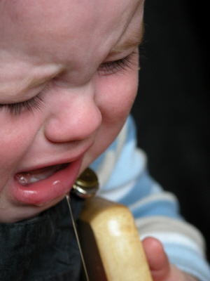

How to Manage a Baby
Diarrhea Disaster
Baby diarrhea is one of the leading causes for infant hospitalization.
In fact, there's a very good chance you're going to open up a diaper sometime in the first year and be welcomed by a green watery mess splattered inside.Yes, it's unpleasant. But ignore it to your peril.
Without proper management it can quickly get serious.
My job here is to equip you with what you need to know to keep him as far away from a hospital stay as possible.
In order to do this, we'll need to evaluate exactly how sick he is.
Is infant diarrhea really present? Or is this just a normal digestive adjustment?
There are three reasons your baby's bowels would change.
- The intestinal tract is moving more food more rapidly through the system.
- Some or most of the food or fluids are not being absorbed normally.
- The small intestine is secreting more fluid than is normal.
The first reason is a normal part of development and will work itself out. The other two will require a deeper study to determine the specific cause of the baby diarrhea.

Normal...versus abnormal.
A normal newborn will have as many as 6-10 stools per day, varying in color. The older the baby, the fewer the dirty diapers present.
An abnormal pooping pattern is when you see that number jump up suddenly. The specific number of dirty diapers will depend on your baby.For example, if your 5-month-old normally has 2 dirty diapers a day, and all the sudden he's having 6, further inquiry is needed.
Or, if your 10-month-old has a regular pattern of pooping every other day, but now is pooping several times in one afternoon, something has changed you need to look into.
In determining whether there is, in fact, baby diarrhea going on, you'll need to consider these questions:
- Is the poop more water than substance?
- Is he soiling more than 5 to 7 diapers a day?
- Did he suddenly get a terrible diaper rash? (Baby diarrhea is extremely acidic, use soft wipes and get a gentle bottom balm.)
- Does he bring his knees up to his chest, as if he is having stomach cramps?
- Is he continually having poop explosions all over his clothes, crib bedding, etc.?
- Is he showing signs of dehydration? (This is very serious!)
Answering Yes, to many of these questions is a sign that there's some form of baby diarrhea going on. The next question is...how bad does he have it?
A mild case of baby diarrhea.
In a mild case, his stools are a little more frequent, perhaps once every 2-3 hours or so. He shows no signs of dehydration (see below), no sign of a fever, still has an appetite, and is normally active.
This may be something called Toddler's Diarrhea (yes, even if he's not a toddler) and a quick diet change may just turn things around. If he's still showing these same patterns in a week, call your doctor for advice and evaluation.
A severe case of infant diarrhea.
In a severe case of diarrhea, your baby will have a watery bowel movement every 1-2 hours or more. He will also show signs of being dehydrated. Things like...
- He hasn't had a wet diaper in 8 hours (using a diaper tracker
is a great help). This is a sign that the kidneys are conserving fluids.
- A sunken soft-spot (easily felt in first 6 months).
- Has experienced prolonged, projectile vomiting.
- Has been vomiting more than 12 hours or has persistant vomiting with diarrhea.
- Has a dry mouth or cries without tears.
- Has blood in the vomit or stool.
- Is becoming more ill over time.
Reminder!
Newborns may not have tears when crying, since tears are part of the developmental milestones.
These are the signs that dehydration is starting to set in. They are flags that should constitute an intervention.
However, there are more serious symptoms that would require a 911 and ambulance ride to the hospital. See these signs of emergency-level dehydration.
What Causes Baby Diarrhea?
Diarrhea (at any age) occurs when the inner lining of the intestine is injured in some way. There are three types of diarrhea. Being aware of each will help you in determining whether a doctor call/visit is necessary, or if simple deitary changes will do the trick.The icky-bug form of baby diarrhea.
Acute diarrhea is caused by viruses and bacteria, and usually is accompanied by other signs of sickness like fever, nausea, vomiting, or dehydration.

Diarrhea creates a very painful rash.
Choose extra soft wipes, and
purchase a gentle bottom balm.
The most common forms of acute diarrhea are gastroenteritis and rotavirus.
Rotavarius is most common in babies 6 months to two years. (Elena had rotavirus when she was 8 months old.)
They have vaccines available for rotavirus that have shown to decrease infection chances drastically.
If you feel your baby may have this type of diarrhea, call your doctor and see if they would like a stool sample.
If so, store one one of the poopy diapers in a ziploc bag and bring it to the doctor's office for testing.
Most types of acute diarrhea can resolve themselves, but occasionally a good dose of antibiotics may be required. It can last anywhere from 2 days to 2 weeks.
The greatest concern with this type of baby diarrhea is the risk of dehydration. Follow these treatment principles to keep your baby's body full of fluids.
Most forms of infectious baby diarrhea are transmitted from directly to the mouth from fingers that have touched contaminated material. This makes good hygiene essential
I have a massive hand pump of instant antibacterial soap sitting on the changing table. I use it every time I change a diaper to kill any lingering bacteria.
The "too much juice" form of diarrhea.
Chronic nonspecific diarrhea is a common situation where a child continually has very loose stools, but is not showing signs of dehydration, is still gaining weight, is marking all the milestones, and seems otherwise very healthy.
This pattern of loose stools can change day to day or week to week, and can also be associated with stress, an illness, a move, dietary changes, or...nothing at all.
It's often referred to as "Toddler's Diarrhea", and recent resesarch has shown that it could be linked to drinking too much fruit juice (especially apple juice) or a diet that is too low in fat.
Usually this condition resolves itself eventually, although limiting fruit juices could certainly help.
If this continues for more than three weeks in a child that otherwise appears to be healthy, he should see the doctor anyway.
The pathological form of diarrhea
Did the word "pathological" freak you out a little? Take a deep breath. Pathological refers to how the cells and tissues are functioning, and is not a sign of some deep-seated
psychological disorder. 
The failure to gain weight, a high fever, and chronic baby diarrhea are the first clues that this type of baby diarrhea may be to blame.
The pediatrician's office can run a series of tests to find out for sure if this is an issue, and give advice on what to do about it.
How to Treat Baby Diarrhea
Obviously, if your infant is vomiting, you'll need to follow these instructions. The first goal with a vomiting baby is to get her to stop so you can get the nutrients her body needs to heal inside.
That said, if your baby is not vomiting, here's what you'll want to do.
If you breastfeed, continue to offer your breast as often as she'll receive it. Also start supplementing with electroyltes (follow the formula fed instructions).
Cow's-milk based formulas can contribute to baby diarrhea, so you may want to switch to a soy-based formula for a few days.
Sometimes severe diarrhea can leave the intestines lactose intolerant for a few days, so lay off the diary for a few days.
Babies who use formula should be given an electrolyte solution as well. Pedialyte
is the best fluid available to prevent dehydration. This chart will describe the amount of Pedialyte
you're baby should consume.
The Best Defense is a Good Offense
I recommend having a stash of Pedialyte
on hand before you spot any infant dehydration symptoms.
This way you can start treatment right away, without having to take a trip to the store.
Along with the Pedialyte, if your infant is hungry, choose foods that contain complex carbohydrates like rice, bread, and cooked potatoes. Bananas and applesauce contain pectin, which can help thicken loose stools and would also be a good choice.
If this diarrhea still persists after two days, especially if a fever is present, call your pediatrician. Even if your baby appears to be acting normal.
What you don't want to do.
Do not give your baby a lot of things with simple sugars. Things like candy, 7-Up, Sprite, fruit juices, Jell-O, etc.
A little patience and loving care can
turn that frown upside down.
Unabsorbed sugar draws even more water into the bowel and will worsen the baby diarrhea.
Also don't withhold food (unless there's vomiting).
Resesarch has shown that this can lengthen the diarrhea, since the lining of the intestine needs fuel to repair the damage.
Do not give young children adult anti-diarrhea medicines like Kaopectate or Imodium.
They don't treat the cause, and just mask the symptoms. This means he could become dehydrated without showing many of the signs, which would be very bad news bears.
Finally, never give boiled milk (of any type) to a child with diarrhea. Boiling allows the water to evaporate, leaving the remaining liquid dangerously high in salt and over-saturated with minerals.
Warning signs that require a doctor call.
Here's the cheat-list of when you need to phone your pediatrician for a consultation or visit.There are signs of dehydration.
If your infant passes more than 8 loose stools in eight hours.
If there is blood in the stool.
If she can't keep any fluids down, despite your best efforts.
If she seems to have tummy pain, a fever, or other obvious signs of illness.
If she has had mild diarrhea for more than a week.
If she has a fever that lasts more than 24 to 48 hours.
If her vomiting lasts more than 24 hours.
If the vomit is green-colored, blood-tinged, or looks like coffee grounds.
If her tummy looks swollen and distended.
If she refuses to eat or drink.
If a rash or jaundice (yellow skin and eyes) appears.
Related Articles
Infant Vomiting? A Mother's Guide to Handling it at Home
Watching your infant vomiting is heart wrenching. Vomiting isn't fun, no matter what age you are. But there's something just so wrong about seeing that tiny body convulse to throw up. This is where you step in, Mom, and take charge. And this is what you do.
The Difference Between a Newborn Vomiting and Just Spitting Up
Sometime's it's hard to tell the difference between a newborn who's vomiting, and one that's merely spitting up. Here's a clear definition of what to look for, and how to treat both conditions.
Handling an Infant Fever Effectively
Does the thought of handling an infant fever leave you in cold sweats? That little plastic beeping stick can greatly reduce your mothering anxiety, yes. But it's only the first grade. You, my dear, need to graduate. You need a crash-course in effective fever manipulation.
Infant Dehydration: Enemy Number One
Infant dehydration is the number one killer of children under 5, causing more than 5 million deaths worldwide. Keeping him well-hydrated and learning the infant dehydration symptoms need to be at the top of your "To Be Learned" list.


Copyright © 2007-2011. All rights reserved.
Remember...when in doubt, give Doc a shout!